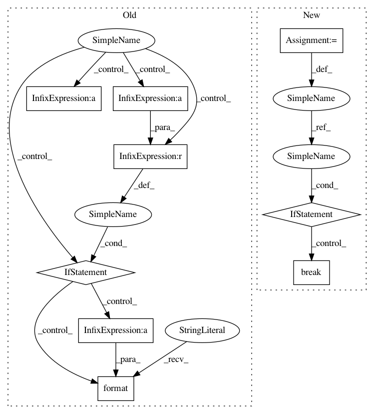

70e1e9c9d0cda4c66e7f877e2d9e23dc3da236e8,pymanopt/solvers/trust_regions.py,TrustRegions,solve,#TrustRegions#Any#Any#Any#Any#Any#Any#,99
Before Change
if verbosity >= 1:
print("Terminated - min grad norm reached after {:d} "
"iterations, {:.2f} seconds.".format(
k, time.time() - time0))
return x
if time.time() - time0 >= self._maxtime:
if verbosity >= 1:
print("Terminated - max time reached after {:d} "
"iterations.".format(k))
return x
if k >= self._maxiter:
if verbosity >= 1:
print("Terminated - max iterations reached after {:.2f} "
"seconds.".format(time.time() - time0))
return x
def _truncated_conjugate_gradient(self, problem, x, fgradx, eta, Delta,
After Change
print(" rho : {:e}".format(rho))
// ** CHECK STOPPING criteria
stop_reason = self._check_stopping_criterion(
time0, gradnorm=norm_grad, iter=k)
if stop_reason:
if verbosity >= 1:
print(stop_reason)
print("")
break
if self._logverbosity <= 0:
return x
else:
self._stop_optlog(x, fx, stop_reason, time0,
In pattern: SUPERPATTERN
Frequency: 3
Non-data size: 9
Instances
Project Name: pymanopt/pymanopt
Commit Name: 70e1e9c9d0cda4c66e7f877e2d9e23dc3da236e8
Time: 2016-02-23
Author: git@sweichwald.de
File Name: pymanopt/solvers/trust_regions.py
Class Name: TrustRegions
Method Name: solve
Project Name: glm-tools/pyglmnet
Commit Name: 4367785c9131771d2dd80b45d4bbb4ca00bd24ac
Time: 2018-09-08
Author: pavan.ramkumar@gmail.com
File Name: pyglmnet/pyglmnet.py
Class Name: GLM
Method Name: fit
Project Name: glm-tools/pyglmnet
Commit Name: a68ad3bda020d9ade2b33c58a3f1406de41b682c
Time: 2018-09-05
Author: pavan.ramkumar@gmail.com
File Name: pyglmnet/pyglmnet.py
Class Name: GLM
Method Name: fit